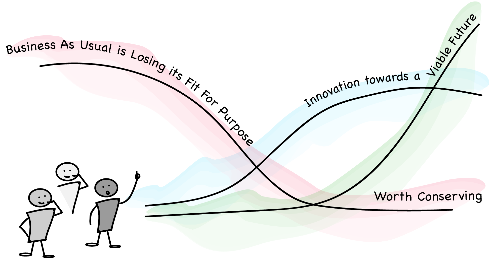

This major research project has been COMPLETED. It was submitted to Ontario College of Art and Design (OCAD) University in partial fulfillment of the requirements for the degree of Master of Design in Strategic Foresight and Innovation.
Research Focus
How might we design a future that fully supports optimal well-being of transgender people in the workplace?
This study explored ...
Well-being as a multidimensional experience from a gender identity perspective.
Current trends in support of well-being of Transgender adults in the workplace.
Available resources to harness so that we can design a Trans positive future of optimal well-being.
